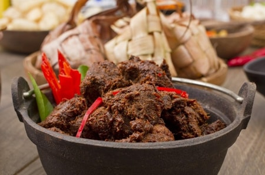

Salah satu makanan terpopuler di indonesia!
Kebanyakan dari kita kalau ke restoran Padang pasti langsung pesan
rendang. Tak salah memang karena ini merupakan masakan nusantara yang
melegenda. Bahkan makanan ini berada di posisi pertama dalam jajaran 50
makanan dunia terenak versi CNN, lho.
Bahan bahan
- 500 gram daging sapi
- 500 ml santan dari 1 butir kelapa
- 2000 ml santan dari 1 butir kelapa
- 3 cm lengkuas dimemarkan
- 2 batang serai diambil bagian putih dan memarkan
- 2 lembar daun kunyit dibuat simpul
Bahan bumbu di haluskan
- 12 buah cabai merah keriting
- 5 buah cabai merah besar dibuang bijinya
- 12 butir bawang merah
- 4 Siung bawang putih
- 4 butir kemiri disangrai
- ½ sdt merica butiran
- 1 sdm ketumbar butiran
- 3 sdt garam
- ½ sdt gula pasir
- 3 cm jahe
Cara membuat
-
Pertama, ambil dagingnya lalu silahkan dipotong-potong 2 cm melawan
serat supaya empuk lalu sisihkan dulu.
-
Masaklah santan encer lalu masukkan lengkuas dan serai. Jangan lupa
tambahkan juga daun kunyit dan bumbu halusnya.
-
Aduk sampai merata lalu masukkan daging dan masak sampai dagingnya
empuk.
-
Jika kuah sudah mengental, kamu bisa mulai menuangi santan kentalnya
lalu masak pada atas api kecil.
- Aduk terus sampai matang dan juga berminyak serta mengental.
Kembali ke atas
Kembali ke halaman utama